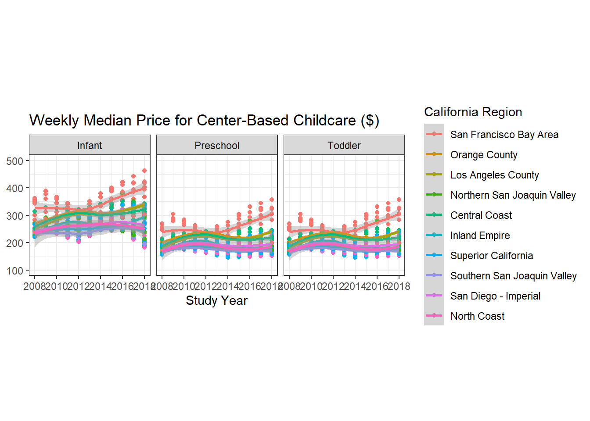

── Attaching core tidyverse packages ──────────────────────── tidyverse 2.0.0 ──
✔ dplyr 1.1.4 ✔ readr 2.1.5
✔ forcats 1.0.0 ✔ stringr 1.5.1
✔ ggplot2 3.5.1 ✔ tibble 3.2.1
✔ lubridate 1.9.4 ✔ tidyr 1.3.1
✔ purrr 1.0.2
── Conflicts ────────────────────────────────────────── tidyverse_conflicts() ──
✖ dplyr::filter() masks stats::filter()
✖ dplyr::lag() masks stats::lag()
ℹ Use the conflicted package (<http://conflicted.r-lib.org/>) to force all conflicts to become errorsLab 6: Childcare Cost in California
The Data
In this lab we’re going look at the median weekly cost of childcare in California. A detailed description of the data can be found here.
The data come to us from TidyTuesday.
0. Load the appropriate libraries and the data.
Rows: 34567 Columns: 61
── Column specification ────────────────────────────────────────────────────────
Delimiter: ","
dbl (61): county_fips_code, study_year, unr_16, funr_16, munr_16, unr_20to64...
ℹ Use `spec()` to retrieve the full column specification for this data.
ℹ Specify the column types or set `show_col_types = FALSE` to quiet this message.
Rows: 3144 Columns: 4
── Column specification ────────────────────────────────────────────────────────
Delimiter: ","
chr (3): county_name, state_name, state_abbreviation
dbl (1): county_fips_code
ℹ Use `spec()` to retrieve the full column specification for this data.
ℹ Specify the column types or set `show_col_types = FALSE` to quiet this message.1. Briefly describe the dataset (~ 4 sentences). What information does it contain? > The dataset contains the childcare price by childcare provider type, age of childre, and county. The years presented in the data are from 2008 to 2018. Although not ideal the data implies that “both parents” refer to one male and one female limiting some factors.
California Childcare Costs
Let’s start by focusing only on California.
2. Create a ca_childcare dataset of childcare costs in California, containing (1) county information and (2) just the year and childcare cost variable information from the childcare_costs dataset.
Hint: There are 58 counties in CA and 11 years in the dataset. Therefore, your new dataset should have 53 x 11 = 638 observations. The final data set should have study year, median household income expressed in 2018 dollars, all the variables associated with full-time median price charged for Center-based Care, and California county names
# A tibble: 638 × 7
county_name study_year mhi_2018 mcsa mc_infant mc_toddler mc_preschool
<chr> <dbl> <dbl> <dbl> <dbl> <dbl> <dbl>
1 Alameda County 2008 80591. 155. 302. 214. 214.
2 Alameda County 2009 80570. 169. 313. 234. 234.
3 Alameda County 2010 80485. 182. 313. 235. 235.
4 Alameda County 2011 79320. 195. 314. 236. 236.
5 Alameda County 2012 78668. 208. 314. 236. 236.
6 Alameda County 2013 77881. 192. 312. 232. 232.
7 Alameda County 2014 78202. 176. 310. 227. 227.
8 Alameda County 2015 80156. 189. 344. 251. 251.
9 Alameda County 2016 83823. 202. 378. 274. 274.
10 Alameda County 2017 88315. 213. 386. 290. 290.
# ℹ 628 more rows3. Using a function from the forcats package, complete the code below to create a new variable where each county is categorized into one of the 10 Census regions in California. Use the Region description (from the plot), not the Region number. An example region has been started for you.
Hint: This is probably a good place to use ChatGPT to reduce on tedious work. But you do need to know how to prompt ChatGPT to make it useful!
4. Let’s consider the median household income of each region, and how that income has changed over time. Create a table with ten rows, one for each region, and two columns, one for 2008 and one for 2018. The cells should contain the median of the median household income (expressed in 2018 dollars) of the region and the study_year. Arrange the rows by 2018 values.
`summarise()` has grouped output by 'region'. You can override using the
`.groups` argument.# A tibble: 10 × 3
# Groups: region [10]
region `2008` `2018`
<fct> <dbl> <dbl>
1 San Francisco Bay Area 90412. 104552
2 Northern San Joaquin Valley 59108. 57769
3 Superior California 57831. 53270
4 North Coast 47862. 45528
5 Southern San Joaquin Valley 52676. 52479
6 San Diego - Imperial 58201. 60344.
7 Los Angeles County 63471. 64251
8 Central Coast 72979 74849
9 Orange County 86452. 85398
10 Inland Empire 65977. 62056 5. Which California region had the lowest median full-time median weekly price for center-based childcare for infants in 2018? Does this region correspond to the region with the lowest median income in 2018 that you found in Q4?
Hint: The code should give me the EXACT answer. This means having the code output the exact row(s) and variable(s) necessary for providing the solution. Consider the slice() functions.
# A tibble: 1 × 2
region infant_care
<fct> <dbl>
1 Superior California 215.6. Recreate the plot (look at online instructions) that shows, for all ten regions, the change over time of the full-time median price for center-based childcare for infants, toddlers, and preschoolers. Recreate the plot. You do not have to replicate the exact colors or theme, but your plot should have the same content, including the order of the facets and legend, reader-friendly labels, axes breaks, and a smooth function.
Warning in geom_point(method = "loess", span = 0.5, se = FALSE): Ignoring
unknown parameters: `method`, `span`, and `se``geom_smooth()` using method = 'loess' and formula = 'y ~ x'